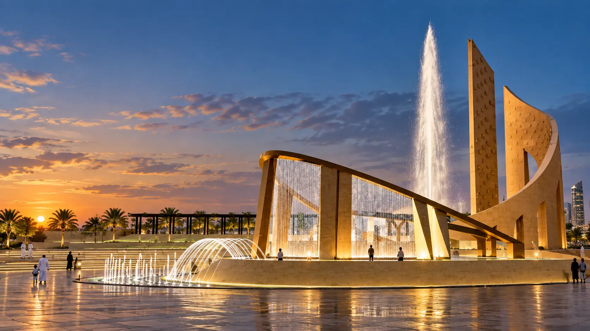
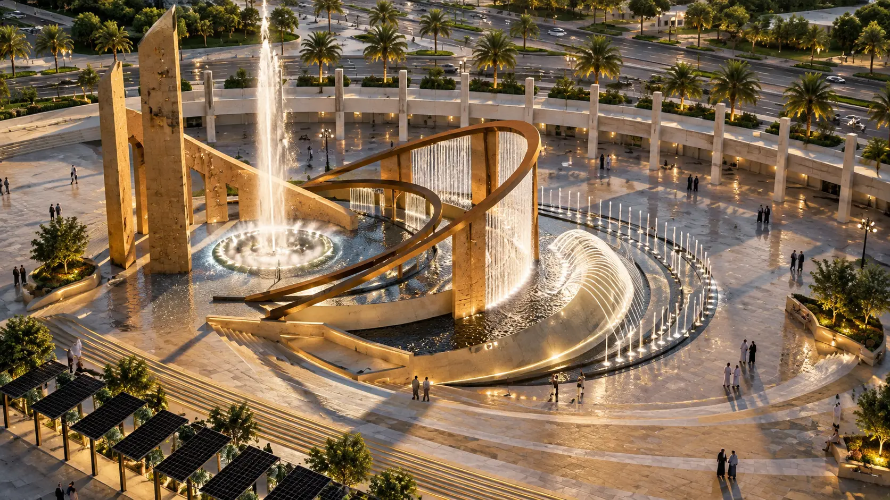
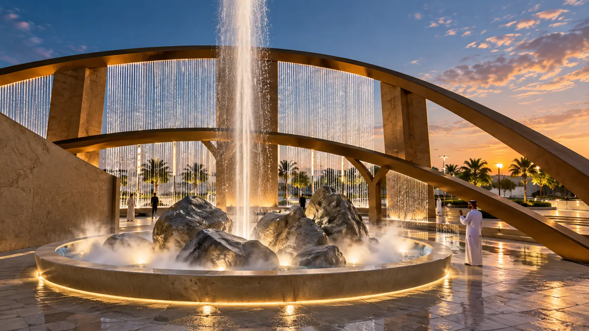
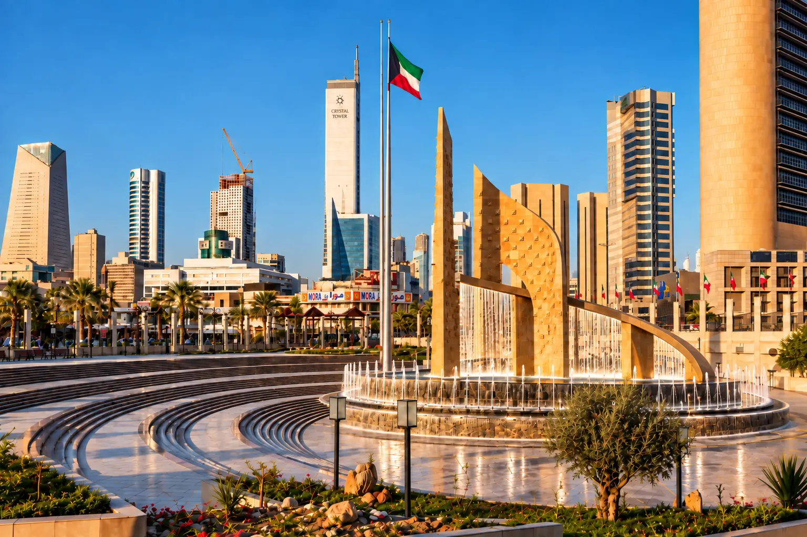
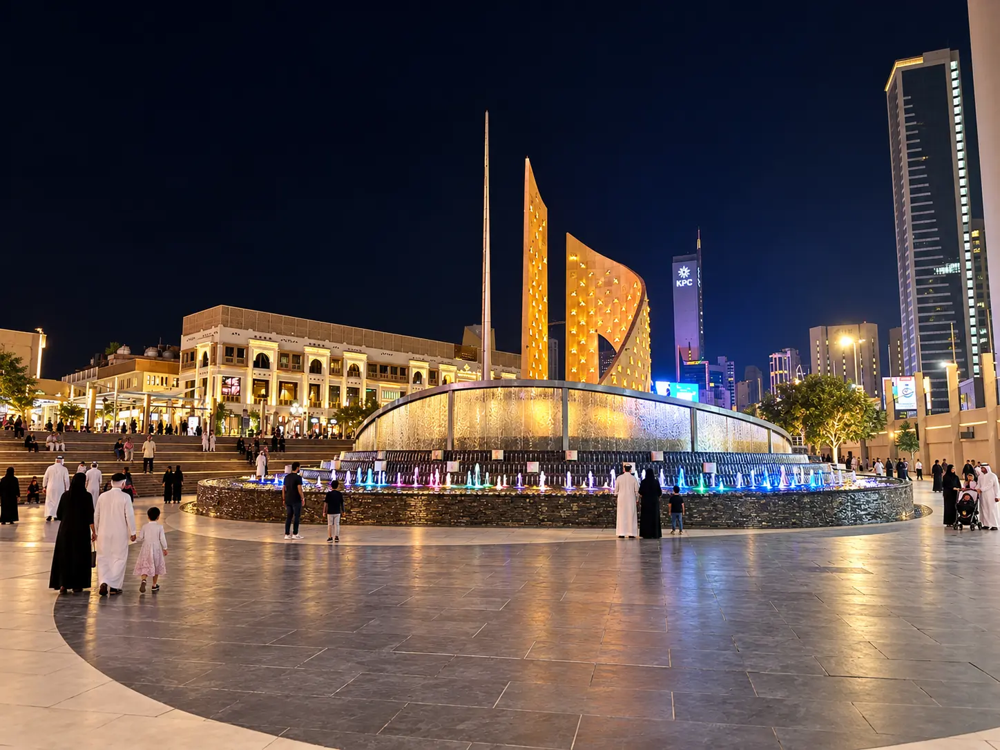

KUWAIT · CIVIC WATER FEATURE
Safat Square
Kuwait
A civic water experience built around Safat Square's monumental structure—layering water curtains, a central high jet and interactive plaza effects.

INTENDED EXPERIENCE
The proposal combines spectacle, climate relief and public interaction. Layered water curtains give the monument movement and depth; a central high jet rises from a boulder-filled cooling bowl; ground-level effects invite people into the wider plaza.


CONCEPT TO DELIVERY
A more compact water strategy for the built square.
BUILT OUTCOME
The completed scheme retained the monument but adopted a more compact water strategy. The smaller water curtain remained and vertical jets were organized within a three-tier pool, while several elements from the wider plaza concept were omitted during delivery.

